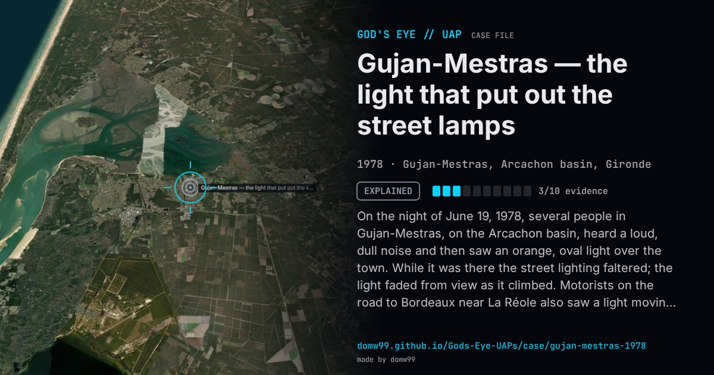

Gujan-Mestras — the light that put out the street lamps

On the night of June 19, 1978, several people in Gujan-Mestras, on the Arcachon basin, heard a loud, dull noise and then saw an orange, oval light over the town. While it was there the street lighting faltered; the light faded from view as it climbed. Motorists on the road to Bordeaux near La Réole also saw a light moving slowly in the stormy sky. The gendarmerie took statements and GEPAN, the French space agency’s UFO office, investigated. GEIPAN classes the case B: probably a weather phenomenon connected with the storm. The two sightings could not be shown to be the same thing.
Explanation
GEIPAN class B: the witnesses probably saw an atmospheric phenomenon linked to the thunderstorm threatening the area. The gendarmerie and GEPAN could not link the town sighting to a light seen by motorists near La Réole.
What was seen
Shape: An orange, oval luminous object
Witnesses: Several residents; motorists on the RN113 near La Réole
Duration: About 23:00 to 00:45
Sources
Browse
- France
- 1970s
- Explained
- Mass sightings
- Official government documents
- Many independent witnesses
- Reported electromagnetic effects
- Lights and fireballs
- Spheres and orbs